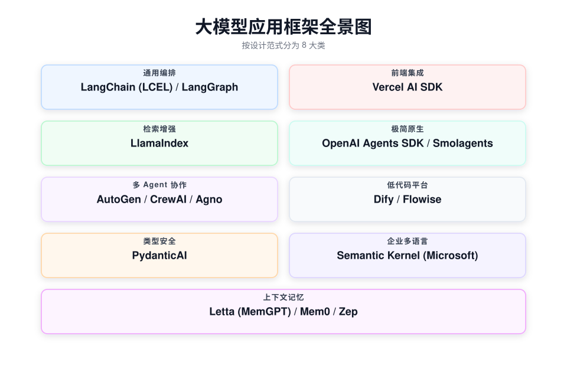
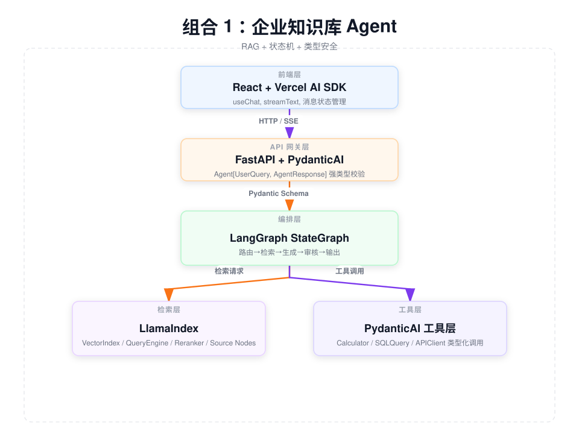
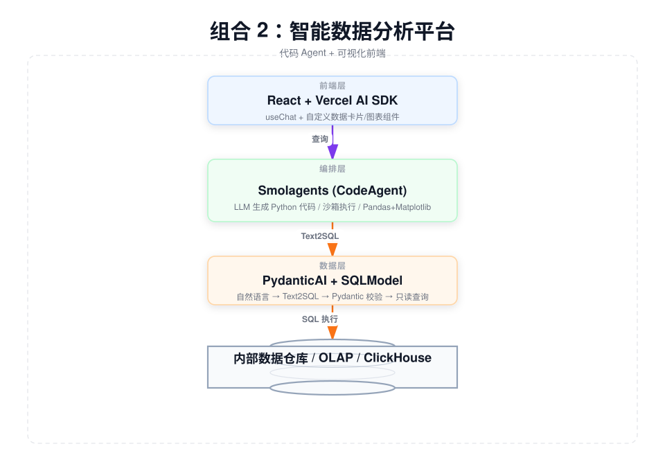
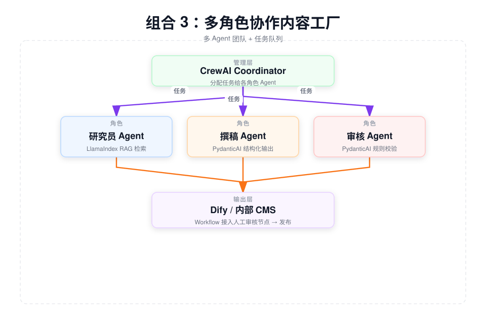
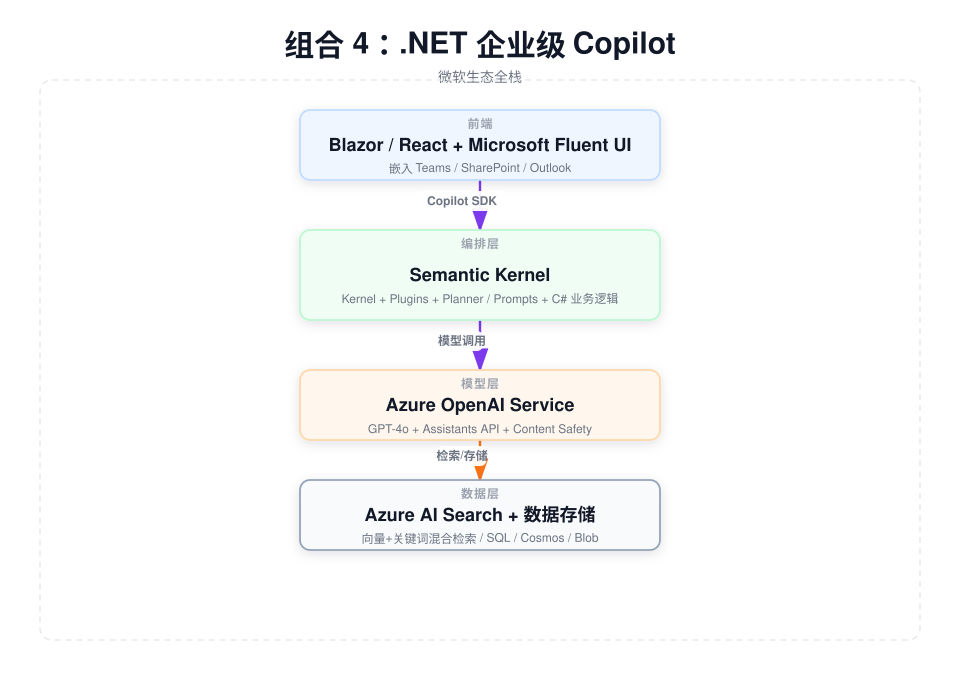
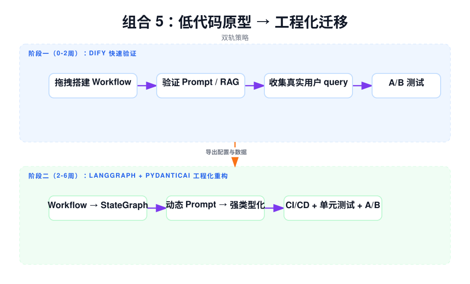
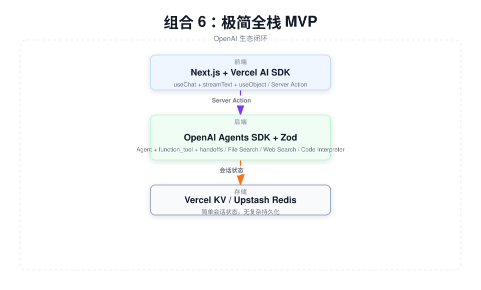
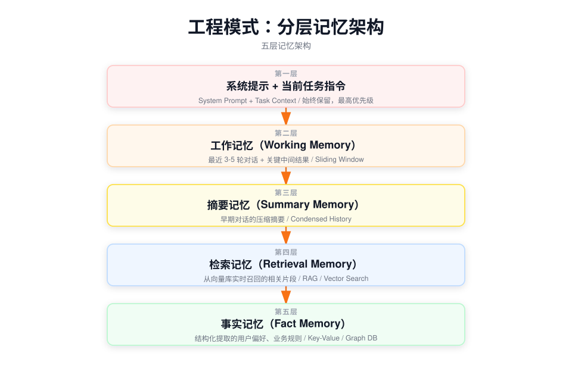
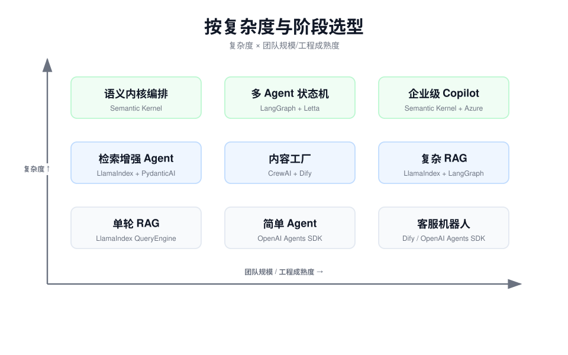

版本：2026-05-16 | 适用：面向需要构建生产级大模型应用的技术团队与架构师
当前大模型应用开发已从"单模型调用"进入"多组件编排"阶段。一个完整的应用通常涉及：模型接入、提示工程、检索增强（RAG）、工具调用、多 Agent 协作、状态持久化、前端流式输出、上下文记忆等多个环节。没有任何单一框架能够最优地覆盖所有环节，因此架构选型的核心在于分层组合、各取所长。
| 原则 | 说明 |
|---|---|
| 接口契约化 | 层与层之间只传递 Pydantic Schema 或 JSON，不共享内部状态对象 |
| 状态隔离 | 编排层管理流程状态，业务层管理领域逻辑，存储层管理知识状态 |
| 流式透传 | 前端需要实时感知时，中间层不做聚合拦截，直接透传 SSE/Stream |
| 降级兜底 | LLM 调用层封装统一网关，支持多模型热切换（如 GPT-4 降级到 Claude 3.5） |
| 渐进演进 | 允许从低代码原型（Dify）向工程化代码（LangGraph/PydanticAI）平滑迁移 |
按设计范式将现有框架分为 8 大类：

| 维度 | LangChain / LangGraph |
LlamaIndex | AutoGen | CrewAI | PydanticAI | Vercel AI SDK | OpenAI Agents SDK | Semantic Kernel |
|---|---|---|---|---|---|---|---|---|
| 核心定位 | 通用编排与状态机 | 检索增强专家 | 多 Agent 对话研究 | 多 Agent 业务流程 | 类型安全 Agent | 前端流式数据流 | 极简 Agent 构建 | 企业级多语言 SDK |
| 主要语言 | Python | Python | Python | Python | Python | TypeScript | Python | C#/Python/Java |
| 核心抽象 | Runnable / StateGraph |
QueryEngine / Index |
ConversableAgent | Agent / Task / Crew |
Agent[Deps, Result] |
useChat / streamText |
Agent / Runner / handoff |
Kernel / Plugin / Planner |
| 拓扑支持 | DAG + 循环图 | DAG（查询流水线） | 群聊循环 | 顺序/层级/并行 | 函数式管道 | 前端 Hook | 简单顺序 + handoff | DAG + 计划器 |
| 状态持久化 | Checkpointer 原生 | 需外部 | 有限 | 无 | 无 | 无 | 无 | 通过外部存储 |
| 人机协同 | interrupt + Command | 无 | UserProxyAgent | 有限 | 无 | 无 | 无 | 通过 Copilot SDK |
| 类型安全 | 弱（动态多） | 中等 | 弱 | 弱 | 强（Pydantic 原生） | TypeScript | 中等 | 强（C# 类型） |
| 流式输出 | 支持 | 支持 | 有限 | 有限 | 支持 | 原生设计 | 支持 | 支持 |
| RAG 能力 | 需手动拼接 | 原生最强 | 需集成 | 需集成 | 需集成 | 无 | 无 | 通过 Memory Plugin |
| 工具调用 | 支持 | 支持 | 支持 | 支持 | Pydantic 函数即工具 | 无（纯前端） | function_tool | Semantic + Native Function |
| 学习曲线 | 陡峭 | 中等 | 中等 | 平缓 | 平缓 | 平缓 | 极简 | 中等 |
| 生产成熟度 | 高 | 高 | 中（研究向） | 中 | 高 | 高 | 中（OpenAI 锁定） | 高（Azure 生态） |
| 框架 | 一句话设计哲学 |
|---|---|
| LangChain | "瑞士军刀"——提供最全的抽象，但复杂度高 |
| LangGraph | "状态即接口"——用共享状态 + 图拓扑构建可循环、可持久化的 Agent 状态机 |
| LlamaIndex | "检索即核心"——从索引策略到查询合成，端到端优化 RAG |
| AutoGen | "对话即协作"——Agent 通过自然语言消息自由协商任务分配 |
| CrewAI | "任务即流程"——人先定义角色与任务结构，Agent 按剧本执行 |
| PydanticAI | "类型即契约"——如果编译通过，大概率能运行；强类型贯穿输入输出 |
| Vercel AI SDK | "流式即体验"——从前端视角解决 LLM 流式输出的状态管理难题 |
| OpenAI Agents SDK | "极简即生产力"——80% 的 Agent 不需要 LangChain 的复杂度 |
| Smolagents | "代码即行动"——Agent 的推理直接生成可执行 Python 代码 |
| Semantic Kernel | "插件即生态"——将企业能力封装为标准化 Plugin，Planner 自动编排 |
| Dify | "可视化即速度"——业务人员拖拽即可验证 AI 流程 |
| Letta | "内存即操作系统"——把有限上下文窗口当作 RAM，软件层实现虚拟内存 |
| Mem0 | "事实即记忆"——自动提取跨会话的事实、偏好、关系 |
场景：金融合规知识库、医疗指南问答、企业制度检索——需要高准确率、可溯源、可审核。

各层职责：
interrupt() 在涉及投资建议、医疗诊断等敏感场景前暂停，等待人工确认。AgentResponse 是强类型（answer: str, sources: list[Source], confidence: float, needs_review: bool）。场景：企业 BI 助手、投研数据分析、科研数据探索——非技术人员用自然语言分析数据。

各层职责：
createDataStream 同时推送文本流和图表 URL，实现"边分析边展示"。场景：投研报告自动生成、营销内容批量生产、合同审查流水线——需要多人角色协作的质量控制。

各层职责：
QueryEngine 生成带引用的研究摘要。ReportSection 模型），确保章节结构、字数、关键词密度符合模板。审核 Agent 用 Pydantic 校验合规规则（如"不得出现具体投资建议"）。场景：企业内部 Copilot、政府/金融行业私有化部署——深度集成 Microsoft 365、Azure、Active Directory。

各层职责：
Plugin 体系将企业内部的 CRM 查询、ERP 接口、文档检索封装为标准功能单元；Planner 自动拆解用户请求并调用多个 Plugin。C# 类型安全 + 依赖注入与企业现有架构无缝衔接。Memory 抽象直接对接。场景：创业公司/大企业创新部门快速试错，验证后无缝迁移到生产代码库。

迁移要点：
ChatPromptTemplate。场景：独立开发者/小团队在一周内上线的客服机器人、个人助理、轻量级 SaaS。

各层职责：
Agent 定义角色，几个 function_tool 对接外部 API（如查订单、订酒店），handoffs 处理"客服转专家"。代码量极少，学习曲线接近零。streamText 消费 Agent 的流式输出，useObject 消费结构化数据（如自动生成的表单）。复杂 Agent 的上下文管理是一个独立的架构难题：Token 窗口溢出、历史信息噪声、跨节点状态传递、长期记忆缺失会直接导致模型"失忆"或"混乱"。
| 框架 | 定位 | 核心机制 | 适用场景 |
|---|---|---|---|
| Letta (MemGPT) | LLM 操作系统级上下文管理 | 把有限上下文窗口当作 RAM，通过 archival_memory_insert/search 实现分页换入换出；支持多 Agent 共享记忆层 | 超长会话（>50轮）、终身个人助理 |
| Mem0 | 跨会话事实记忆层 | 自动提取事实/偏好/关系；Adaptive Retrieval 根据当前查询召回最相关记忆 | 客服 Agent、理财顾问、任何需要"记住用户"的服务 |
| Zep | 长期对话记忆服务 | Memory Graph 构建实体关系图；异步事实提取；支持模糊指代消解（"上次说的那个项目"） | 投研问答、医疗问诊、复杂对话回溯 |
| 框架 | 内置机制 | 能力边界 |
|---|---|---|
| LangGraph | State + Reducer + Checkpointer | 管理流程状态（节点间传递）和持久化（断点续传），但不自动压缩语义记忆 |
| Semantic Kernel | ChatHistory + Token Limit + SummarizationMiddleware | 自动裁剪消息列表和摘要旧消息，适合中等长度对话 |
| AutoGen | GroupChat + ChatResult | 管理群聊历史，长期记忆需外部集成 |
生产级复杂 Agent 推荐采用五层记忆架构：

实现建议：
复杂 Agent 的不同节点应看到不同的上下文视图：
| 节点类型 | 应看到的上下文 | 不应看到的上下文 |
|---|---|---|
| 意图识别 | 用户最近 1 轮输入 + 全局意图分类规则 | 全部历史消息（噪声） |
| 检索 | 用户问题 + 精简实体背景（从 Mem0 查询） | 系统内部逻辑 |
| 生成 | 检索结果 + 系统提示 + 最近 2 轮对话 | 早期无关历史 |
| 工具执行 | 仅工具所需的参数 Schema + 安全上下文 | 用户闲聊历史 |
| 审核 | 完整请求链路（用于合规审查） | — |
实现：在 LangGraph 中定义 context_router 节点，在每个业务节点入口前按需组装上下文。
为不同信息来源分配固定 Token 配额，防止某一部分挤占窗口：
budget = {
"system_prompt": 1000,
"retrieved_docs": 3000,
"chat_history": 2000,
"tool_outputs": 2000,
"reasoning_scratchpad": 1000
}| 应用场景 | 推荐组合 | 核心框架 | 备选方案 |
|---|---|---|---|
| 企业知识库问答 | 组合 1 | LlamaIndex + LangGraph + PydanticAI | Dify 快速原型 |
| 智能数据分析 | 组合 2 | Smolagents + PydanticAI + Vercel AI SDK | LangChain + Code Interpreter |
| 内容生成流水线 | 组合 3 | CrewAI + LlamaIndex + PydanticAI + Dify | AutoGen（研究向） |
| Microsoft 生态 Copilot | 组合 4 | Semantic Kernel + Azure OpenAI | — |
| 快速验证 → 工程化 | 组合 5 | Dify → LangGraph + PydanticAI | Flowise → 自研 |
| 独立开发者 MVP | 组合 6 | OpenAI Agents SDK + Vercel AI SDK | Agno |
| 超长会话助理 | — | Letta + Mem0 | Zep |
| 金融/医疗高合规 | 组合 1/4 | PydanticAI + LangGraph + 人工审核节点 | Semantic Kernel |
| 团队背景 | 首选生态 | 理由 |
|---|---|---|
| Python 全栈 + 重视类型安全 | PydanticAI + LangGraph | 与 FastAPI/SQLModel 生态无缝衔接 |
| Python 数据科学 | Smolagents + LlamaIndex | 代码即行动，与 Pandas 生态融合 |
| TypeScript / 前端为主 | Vercel AI SDK + OpenAI Agents SDK | 前后端统一语言，部署在 Vercel/Node |
| .NET / Azure 企业 | Semantic Kernel + Azure OpenAI | 原生集成 Active Directory、Office 365 |
| Java / 传统企业 | Semantic Kernel (Java) | 微软官方 Java SDK，或 Spring AI |
| 业务人员 + 少量技术 | Dify / Flowise | 可视化编排，降低参与门槛 |

| 阶段 | 周期 | 目标 | 关键动作 |
|---|---|---|---|
| 第一阶段：验证 | 0-4 周 | 验证 PMF，确定技术可行性 | 用 Dify / OpenAI Agents SDK 搭建原型；收集 100+ 真实 query；评估不同模型的输出质量 |
| 第二阶段：核心 | 4-12 周 | 搭建生产级核心链路 | 迁移到 LangGraph / PydanticAI；接入内部数据源；建立评估基准（Evals）；接入可观测性（LangSmith） |
| 第三阶段：增强 | 3-6 月 | 增加复杂能力与记忆 | 引入 Letta / Mem0 管理长期记忆；增加多 Agent 协作（CrewAI / LangGraph Subgraph）；接入人工审核节点 |
| 第四阶段：规模化 | 6-12 月 | 多团队复用与平台化 | 抽象为内部 Agent 平台；标准化 Plugin / Tool 市场；A/B 测试框架；成本监控与模型路由优化 |
| 框架 | 官方文档 | GitHub | 核心语言 |
|---|---|---|---|
| LangChain / LangGraph | python.langchain.com | github.com/langchain-ai | Python |
| LlamaIndex | docs.llamaindex.ai | github.com/run-llama | Python |
| AutoGen | microsoft.github.io/autogen | github.com/microsoft/autogen | Python |
| CrewAI | docs.crewai.com | github.com/joaomdmoura/crewai | Python |
| PydanticAI | ai.pydantic.dev | github.com/pydantic/pydantic-ai | Python |
| Vercel AI SDK | sdk.vercel.ai/docs | github.com/vercel/ai | TypeScript |
| OpenAI Agents SDK | openai.github.io/openai-agents-python | github.com/openai/openai-agents-python | Python |
| Smolagents | huggingface.co/docs/smolagents | github.com/huggingface/smolagents | Python |
| Dify | docs.dify.ai | github.com/langgenius/dify | Python/TS |
| Semantic Kernel | learn.microsoft.com/semantic-kernel | github.com/microsoft/semantic-kernel | C#/Py/Java |
| Letta (MemGPT) | docs.letta.com | github.com/letta-ai/letta | Python |
| Mem0 | docs.mem0.ai | github.com/mem0ai/mem0 | Python |
| Zep | getzep.github.io/zep | github.com/getzep/zep | Python |
结语：大模型应用架构没有"银弹"。2026 年的工程共识是分层组合、接口契约化——让最擅长检索的框架管检索，最擅长编排的框架管流程，最擅长类型安全的框架管接口，最擅长前端的框架管用户体验，通过标准化的 Pydantic Schema 和 REST API 将它们像乐高一样拼起来。从 Dify 验证开始，向 LangGraph + PydanticAI 演进，在需要长期记忆时引入 Letta/Mem0，是已被验证的务实路径。